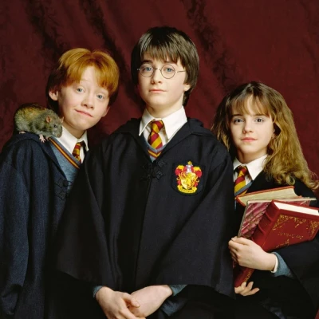

Nós. 🧙
Três estudantes de Desenvolvimentos de Sistemas pela escola de Hogwarts fazem parcerias com empresas e instituições para criar páginas WEB que facilitam e dinamizam a comunicação com clientes.
A ideia de formar o grupo surgiu quando um dos professores da escola propôs uma atividade em grupo aos estudantes. No início, eram apenas três amigos trabalhando online. Hoje, formam uma equipe com mais de 20 estudantes que trabalham num pequeno espaço localizado no centro de Londres.